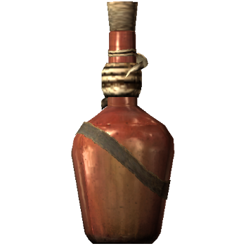

-75%
Potion Of Healing
A magical brew that will restore some health instantly and make you ready for battle again. This particular one is brewed from butterfly wings and Saber Cat eyes.
Comes in a red-stained glass bottle, containing 300ml of brew.
Add to Cart
48g 12g